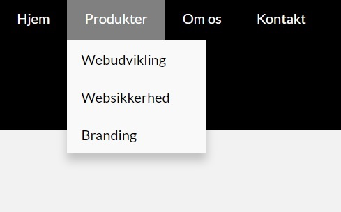

Last project of the semester, and what a way to end it! On this flow, we're tasked to redesign a danish version of a webpage by the fictionary webbureau, Sweetbot. The main focus for this project was to showcase our understanding of how to implement a responsive website, with some minor jQuery elements to it.
A group of four, we managed to pull out a danish version - including a hotbot logo, for their brand new e-commerce solution. All of the following can be previewed here
Ultimately everything regarding the responsiveness and, then jQeury implementation was working correctly. The main feedback regarding the website was the hotbot shop. The user couldnt figure out where the shop was. So what we did to fix that issue, was to make a navbar on "produkter" drop down. That way they could see each product individually.
